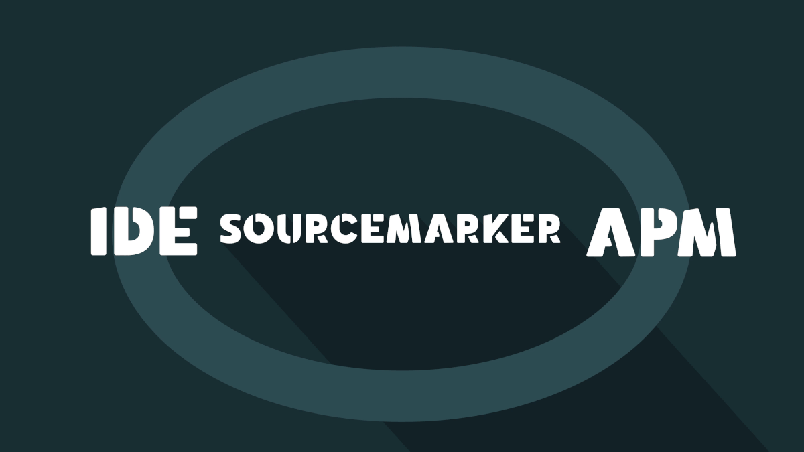

SourceMarker: Continuous Feedback for Developers

SourceMarker is an open-source continuous feedback IDE plugin built on top of Apache SkyWalking, a popular open-source APM system with monitoring, tracing, and diagnosing capabilities for distributed software systems. SkyWalking, a truly holistic system, provides the means for automatically producing, storing, and querying software operation metrics. It requires little to no code changes to implement and is lightweight enough to be used in production. By itself, SkyWalking is a formidable force in the realm of continuous monitoring technology.
SourceMarker, leveraging the continuous monitoring functionality provided by SkyWalking, creates continuous feedback technology by automatically linking software operation metrics to source code and displaying feedback directly inside of the IDE. While currently only supporting JetBrains-based IDEs and JVM-based programming languages, SourceMarker may be extended to support any number of programming languages and IDEs. Using SourceMarker, software developers can understand and validate software operation inside of their IDE. Instead of charts that indicate the health of the application, software developers can view the health of individual source code components and interpret software operation metrics from a much more familiar perspective. Such capabilities improve productivity as time spent continuously context switching from development to monitoring would be eliminated.
Logging
The benefits of continuous feedback technology are immediately apparent with the ability to view and search logs directly from source code. Instead of tailing log files or viewing logs through the browser, SourceMarker allows software developers to navigate production logs just as easily as they navigate source code. By using the source code as the primary perspective for navigating logs, SourceMarker allows software developers to view logs specific to any package, class, method, or line directly from the context of the source code which resulted in those logs.
Tracing
Furthermore, continuous feedback technology offers software developers a deeper understanding of software by explicitly tying the implicit software operation to source code. Instead of visualizing software traces as Gantt charts, SourceMarker allows software developers to step through trace stacks while automatically resolving trace tags and logs. With SourceMarker, software developers can navigate production software traces in much the same way one debugs local applications.
Alerting
Most importantly, continuous feedback technology keeps software developers aware of production software operation. Armed with an APM-powered IDE, every software developer can keep track of the behavior of any method, class, package, and even the entire application itself. Moreover, this allows for source code to be the medium through which production bugs are made evident, thereby creating the feasibility of source code with the ability to self-diagnose and convey its own health.
Download SourceMarker
SourceMarker aims to bridge the theoretical and empirical practices of software development through continuous feedback. The goal is to make developing software with empirical data feel natural and intuitive, creating more complete software developers that understand the entire software development cycle.
This project is still early in its development, so if you think of any ways to improve SourceMarker, please let us know.